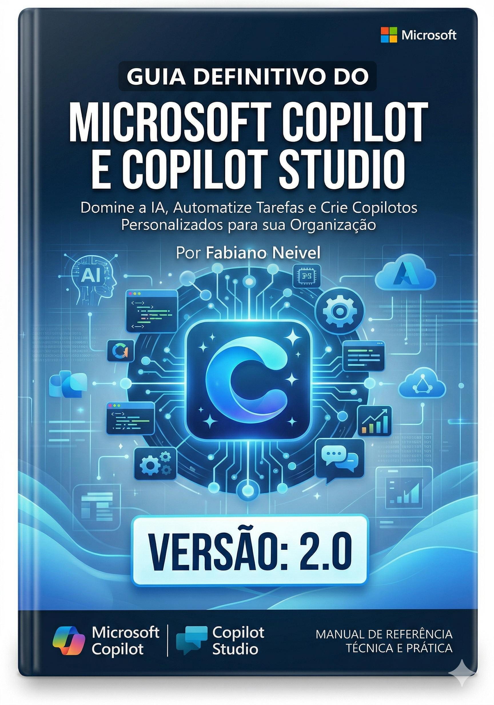

Microsoft 365 Copilot
Word, Excel, PowerPoint, Teams, Outlook e a lógica de produtividade com IA.
Um guia profissional para aprender Microsoft Copilot e Copilot Studio de forma completa, com duas experiências de estudo: leitura tradicional em PDF e navegação imersiva em uma plataforma moderna.

O PDF funciona como manual de referência. A plataforma HTML transforma o estudo em uma jornada visual, com navegação rápida, busca, progresso e interface premium.
Word, Excel, PowerPoint, Teams, Outlook e a lógica de produtividade com IA.
Framework GCSE: objetivo, contexto, fonte e expectativa para gerar respostas melhores.
Topics, triggers, nodes, variables, entities, tools e publicação de agentes.
Multi-agent architecture, MCP, A2A, governança, segurança e analytics.
Agentes de status, monitoramento, conferência, conhecimento interno e orquestração.
Business case, conformidade, privacidade, boas práticas e checklist de go-live.
O aluno navega por capítulos, consulta temas rapidamente, acompanha progresso e revisa conceitos sem depender apenas da leitura sequencial do PDF.
Comprar agoraManual completo para leitura, consulta e impressão.
Interface moderna com navegação, busca, cards e progresso.
Estruturas para aplicar em projetos reais de Copilot Studio.
Ideal para profissionais que querem dominar Copilot com profundidade, sem depender de conteúdos soltos e superficiais.
Entrega digital pela Hotmart
Comprar agora Compra segura via Hotmart • Garantia conforme configurada na plataformaNão. É um guia profissional em PDF acompanhado de uma plataforma HTML interativa para estudo.
Não. O PDF abre em qualquer leitor e a plataforma HTML abre no navegador.
Sim. O conteúdo começa pelos fundamentos e avança até temas mais técnicos como agentes, governança e protocolos.
Após a compra na Hotmart, você recebe os arquivos e instruções de acesso conforme configurado na entrega do produto.
Leitura tradicional quando quiser profundidade. Plataforma interativa quando quiser velocidade e imersão.
Quero acessar agora